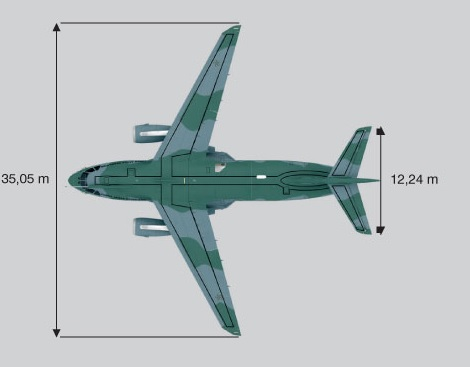
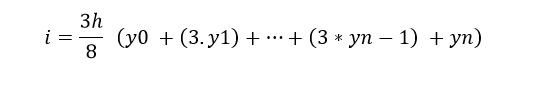
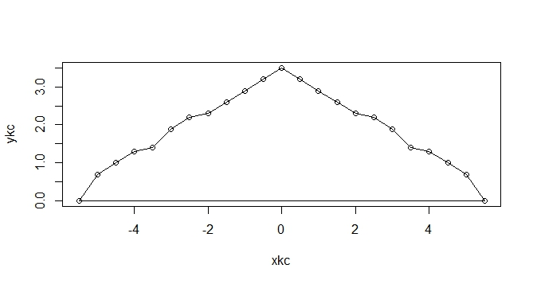
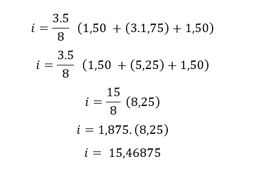
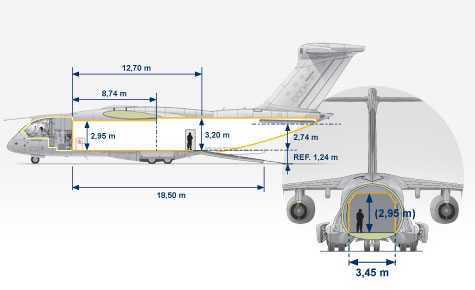

Luan Cenci1
Instituto Federal de Educação, Ciência e Tecnologia Catarinense (IFC) - Campus Videira- Caixa Postal 89.560-000- Videira-SC-Brasil
lcencicolo@gmail.com
Abstract. In a world where air transport moves trillion a year, know the steps of the aircraft, where you is shown substantial.
Resumo. Num mundo aonde o transporte aéreo movimenta trilhões ao ano, conhecer as medidas da aeronave, aonde você se encontra se mostra substancial.
1.Introdução
Desde o primeiro voo em 1906, por Santos-Dumont, as aeronaves se tornaram um dos principais meios de transporte na atualidade, transportando desde de passageiros até cargas de tamanhos e capacidades gigantescos. Fabricamos hoje em dia, desde os pequenos veículos e que controlamos remotamente aos gigantes e monstruosas aeronaves Antonov. Sendo que em alguns casos, certos locais só podem ser acessados por aeronaves, o que os tornam de extrema utilidade aos usuários militares e civis.
Por utilizar aerodinâmica e a sua capacidade de voar e tornar possível a dominância do ser humano no ar, as aeronaves precisam de bastantes cálculos e medidas que sejam exatas e de modo que torne a aeronave totalmente útil, tanto no campo de batalha ou na ponte aérea Rio - São Paulo. Mas muitos cálculos que são utilizados pelos fabricantes vão de simples cálculos de áreas e de velocidade, indo até cálculos que necessitam de integrais e equações bem definidas, para se saber as grandezas envolvidas.
2. Grandezas envolvidas
Em muitos casos, podemos calcular de uma aeronave as áreas e os volumes, e a velocidade que a mesma aeronave tem de voar e de também pode carregar carga utilizando as integrais.
Um caso que envolve o cálculo de área, podemos usar as áreas ocupadas por uma aeronave, como as próprias asas. Aeronaves podem apresentar diferentes formas e desenhos de asas, desde de desenhos com asas retas até utilizando enflechamento negativo. Isso depende muito da proposta da fabricante para a sua aeronave, de como ela vai cortar o ar e a aerodinâmica que se pretende que a mesma tenha.
Os diferentes formatos de asas de diversas aeronaves.
Isso poderia tornar difícil o cálculo da área de uma aeronave, e torna-lo bastante impreciso pois, os seus desenhos podem seguir diferentes formas, como as pontas da asa da aeronave fazem uma curva de praticamente 90o para o fim do desenho. Como sugerido por muitos, podemos calcular a aeronave usando o teorema de Pitágoras. Mas como citado neste mesmo parágrafo, o desenho pode dificultar esse tipo de cálculo.
KC-390, aeronave usada como exemplo neste caso.
3.Integrando valores
A fórmula utilizada para calcular a área da asa de uma aeronave, é a integração utilizando a segunda regra de Simpson, com esta fórmula:
Para isso temos que dividir uma parte da aeronave em diversos pontos dentro de um plano cartesiano, assim podemos ter diversos pontos de X e Y e com mais precisão, essa medida foi feita na aeronave KC-390, mostrada na imagem acima, com a separação de pontos em pontos.
Pontos de X E Y, da asa da aeronave
| X | Y |
|---|---|
| -5,5 | 0.00 |
| -5 | 0.69 |
| -4,5 | 1.00 |
| -4 | 1.29 |
| -3,5 | 1.40 |
| -3 | 1.89 |
| -2,5 | 2.19 |
| -2 | 2.30 |
| -1,5 | 2,60 |
| -1 | 2,90 |
| -0,5 | 3,20 |
| 0 | 3.50 |
| 0,5 | 3,20 |
| 1 | 2,90 |
| 1,5 | 2,60 |
| 2 | 2,30 |
| 2,5 | 2,19 |
| 3 | 1,89 |
| 3,5 | 1,40 |
| 4 | 1,29 |
| 4,5 | 1,00 |
| 5 | 0,69 |
| 5,5 | 0.00 |
Abaixo mostramos um gráfico com os pontos X's e Y's tirado das asas da aeronave:
Com vontade de aumentar ainda mais a precisão deste cálculo e com vista de acelerar o processo do mesmo em si, foi montado uma função em R que realize a segunda regra de Simpson, a função Lisa, em referência ao seriado de televisão animado The Simpsons, recebe como entrada um vetor com os pontos de Y, e a amplitude h de seus subintervalos.
lisa <- function(y,h){Segundos os pontos mostrados acima, o valor total da área da asa da aeronave utilizando a função lisa é 23,8915 cm2, por utilizar um modelo em escala, os valores estão em centímetros. Mas como se percebe, existe uma área vazia entre a ponta das asas até a parte principal da sua fuselagem. Foi feito o mesmo procedimento para saber a área desse local, o resultado desse cálculo é 10,36688 cm2. A área da asa em si é de 13,494375 cm2.
Já na cauda da aeronave podemos ver que também aparece uma pequena asa, este tipo de asa é feito muitas vezes para que a própria a aeronave não perca estabilidade durante o voo, e voe em linha reta, como no caso das medidas a utilização ou não da cauda da aeronave vai depender do projeto proposto pela própria fabricante da aeronave em si. Também resolvemos saber qual era a área asa traseira da aeronave em si, localizada na cauda, assim, decidimos tirar os pontos e calcular. Veja os pontos tirados da asa traseira:
| X | Y |
|---|---|
| -1,8 | 0,00 |
| -1,5 | 0,5 |
| -1,2 | 0,7 |
| -0,9 | 0,9 |
| -0,6 | 1,1 |
| -0,3 | 1,3 |
| 0,0 | 1,5 |
| 0,3 | 1,3 |
| 0,6 | 1,1 |
| 0,9 | 0,9 |
| 1,2 | 0,7 |
| 1,5 | 0,5 |
| 1,8 | 0,00 |
Pegando os dados destes pontos e calculando da asa, que se encontra na parte de trás da aeronave, podemos ver que foi necessário encurtar os subintervalos entre as pontas e o centro da mesma, para que houvesse mais pontos para serem calculados pela função Lisa. A área da asa na cauda é de 3,54375cm2, o espaço vazio que se encontra na mesma é de 1,0125 cm2 descontando um por outro podemos dizer que esta parte ocupa uma área de 2,53125 cm2.
Para demonstrar como a utilização de integrais em área para asa é muito preciso, fizemos o mesmo, mas numa aeronave com asas em delta, um caça de combate Douglas A-4E Skyhawk, utilizado pela Marinha Brasileira. E a asa tem área de 29.13188 cm2. E a sua asa na cauda é de 4.944375 cm2. Por ser uma asa em delta não é necessário calcular os espaços vazios que existem entre a fuselagem do caça e a ponta da asa.
Podemos calcular a altura das asas de uma ponta a outra da aeronave, sendo as próprias são muito finas para podermos calcular usando subintervalos menores, para isso foi usado a envergaduras da mesma para se calcular a sua altura.
| X | Y |
|---|---|
| -5,00 | 1.50 |
| 0,00 | 1,70 |
| 5,00 | 1.50 |
Utilizando a segunda forma de Simpson, podemos ver abaixo o seu resultado, aplicando, num dos exemplos dos pontos da própria aeronave.
4. Volumes
Para se calcular os volumes dentro do compartimento de carga desta aeronave, podemos tentar diversos tipos de técnicas, temos desde de encher o compartimento de água o que poderia tomar a possível medida totalmente imprecisa pois a agua pode entrar e ocupar lugares aonde necessariamente aonde não seria colocado cargas de dentro do mesmo, ou poderias se colocar encher o compartimento de EPS (Poliestireno Expandido) com tamanhos conhecido isso, o que poderia tornar também o cálculo impreciso.
Outra técnica que podemos utilizar, que faça menos bagunça, é usar integrais duplas ou até mesmo triplas. Tendo os pontos X’s e Y’s podemos descobrir a área do objeto a ser estudado e os volumes.
Para tornar ainda mais preciso, foi utilizada uma função em R para fazer isso. Maggie faz a segunda formula de Simpson, duplamente, utilizando a função abaixo.
maggie <- function(x,y,h){Utilizando as imagens disponibilizadas pela Embraer Defesa e Segurança, podemos saber o desenho do compartimento de carga da aeronave KC-390, que é usada de exemplo neste cálculo:
Desenho do compartimento de Carga.
Separamos este mesmo compartimento de carga em duas seções diferentes, uma delas que vai logo após o cockpit até a abertura traseira, para os soldados e as cargas até os e outra que vai da abertura até a cauda da mesma.
Apresentamos as medidas abaixo:
| X | Y |
|---|---|
| 0 | 1,1 |
| 0,5 | 1,1 |
| 1 | 1,1 |
| 1,5 | 1,1 |
| 2 | 1,1 |
| 2,5 | 1,2 |
| 3 | 1,1 |
| 3,5 | 1,2 |
| 4 | 1,2 |
na tabela abaixo podemos ver os pontos de X e Y da segunda seção:
| X | Y |
|---|---|
| 0 | 0.00 |
| 0,5 | 0,01 |
| 1 | 0,10 |
| 1,5 | 0,25 |
| 2 | 0,40 |
| 2,5 | 0,60 |
| 3 | 0,90 |
Usando os pontos que foram tirados pelos desenhos e a função Maggie podemos saber o volume que as duas seções apresentam, sendo que a primeira seção é de 55,29164 cm3, e o da segunda seção é de 5,80384 cm3, somando as duas seções teremos 61.09548 cm3, que em litros dá 61095,48.
5. Conclusão
A utilização de integrais para cálculos em aeronaves se mostra como de muito ajuda no momento de descobrir as medidas de cada aeronave, que existem no mundo desde o KC-390 usado como exemplo neste artigo até as gigantescas aeronaves Antonov da antiga era soviética. Isso pode ser usado desde as forças aéreas ao redor do mundo como por fabricantes de aeronaves.
Referencias
EMBRAER S.A. (São Paulo). KC-390. 2012. Disponível em:
FERNADES, Cynthia; BATISTA, Bruno. KC-390 : O céu é o Limite. Aerovisão: A Revista da Força Aérea Brasileira, Brasilia, p.14-18, 08 abr. 2016. Mensal. Disponível em:
PECCINI, Jussara. Inovação à Brasileira. Aerovisão: A Revista da Força Aérea Brasileira, Brasília, p.21-23, 08 abr. 2016. Mensal. Disponível em:
PRESS, William H. et al. Métodos Numéricos Aplicados: Rotinas em C++. 3. ed. Porto Alegre: Bookman, 2011. 1261 p.
CRAN (Estados Unidos). The Comprehensive R Archive Network. Disponível em: